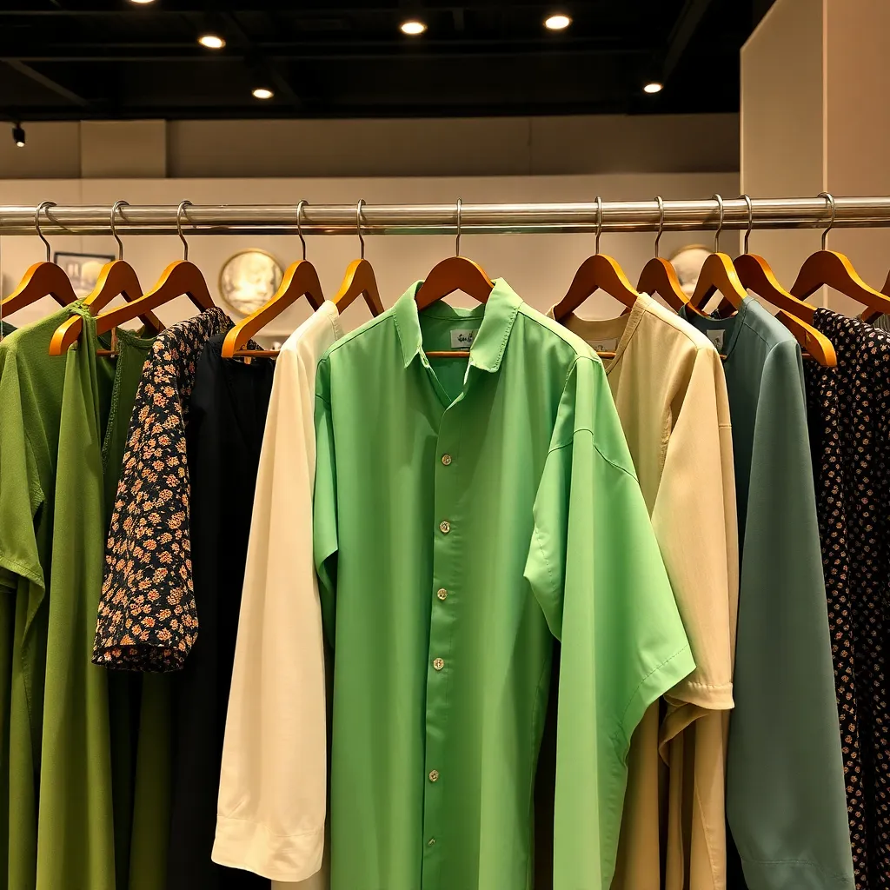
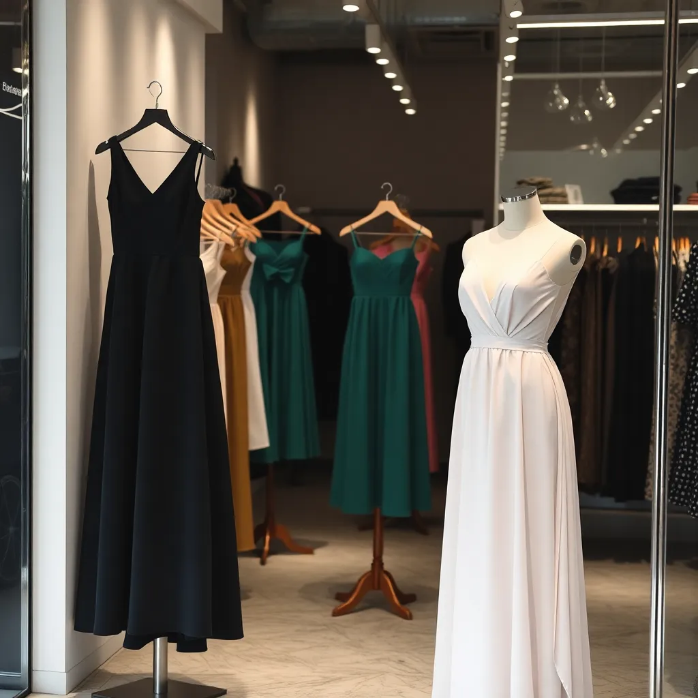
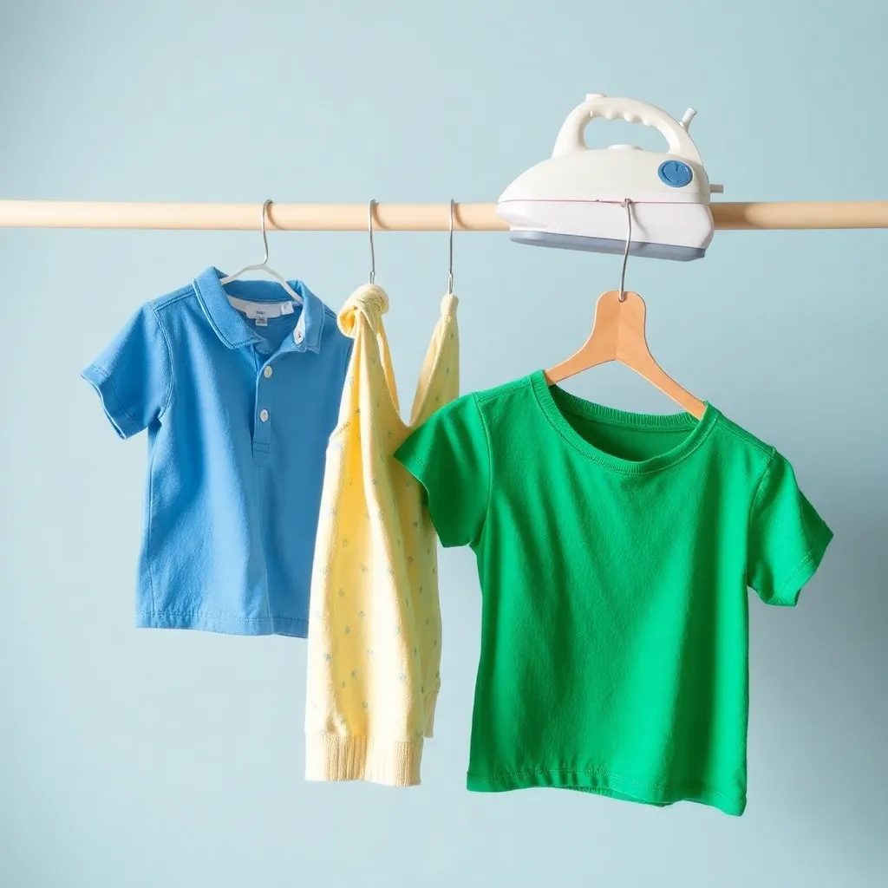
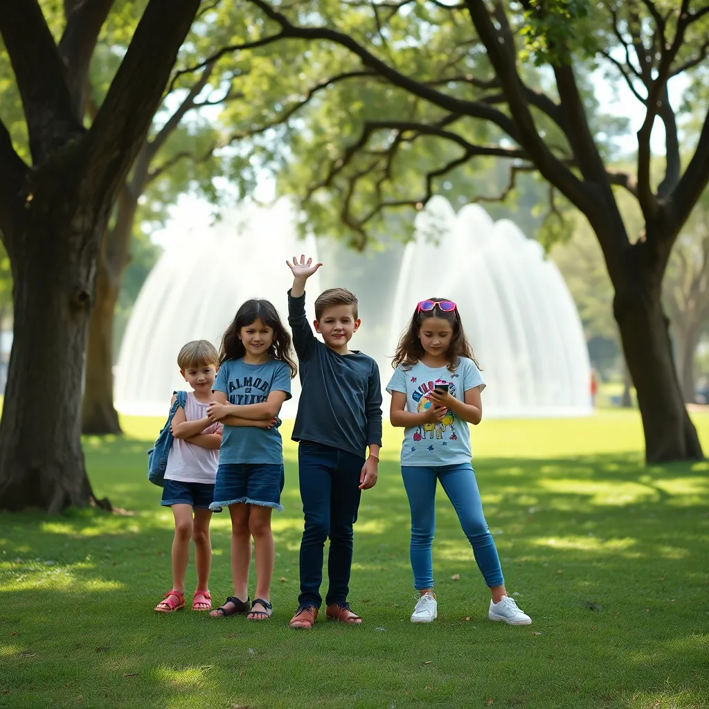
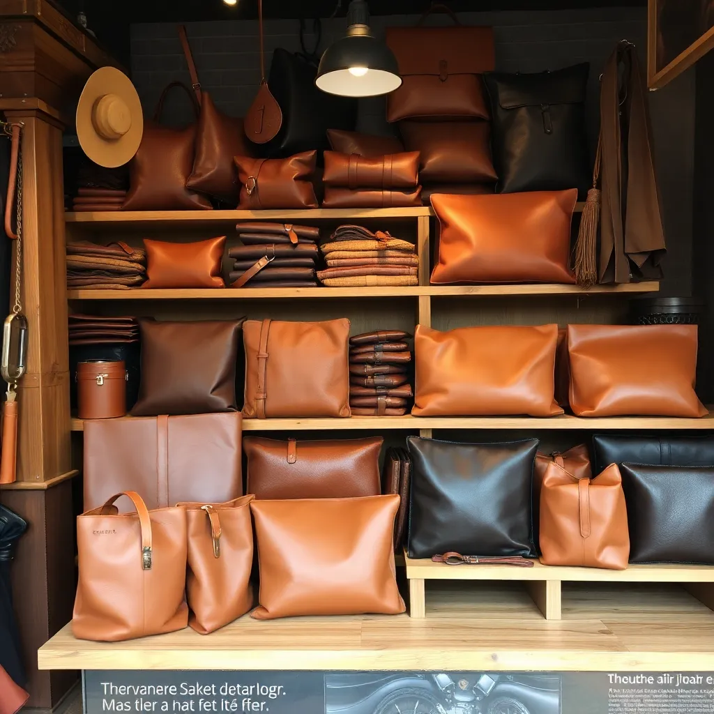
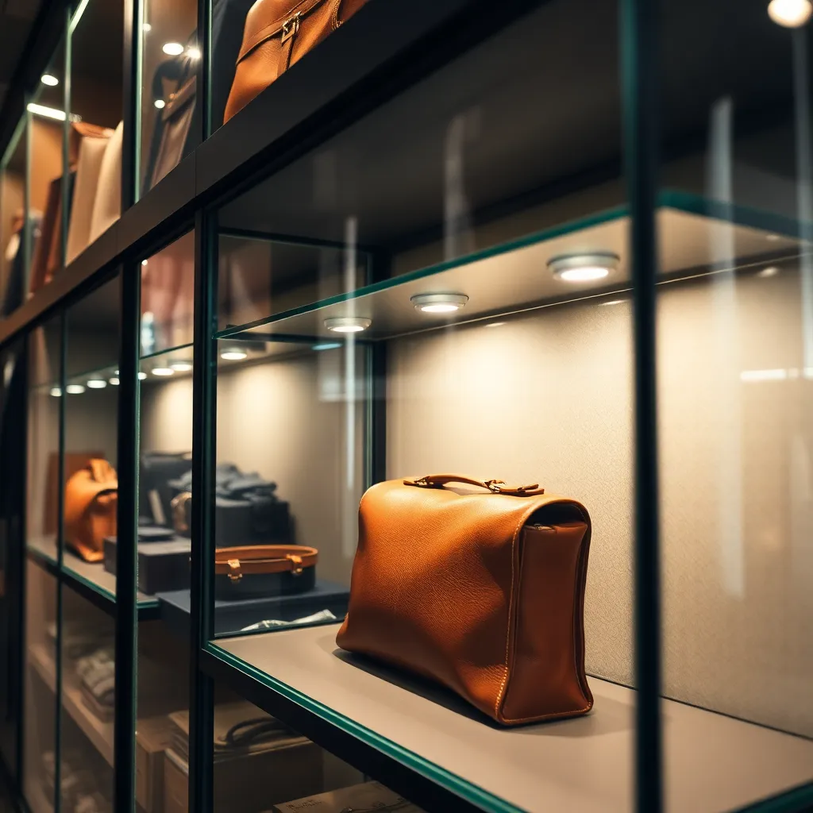
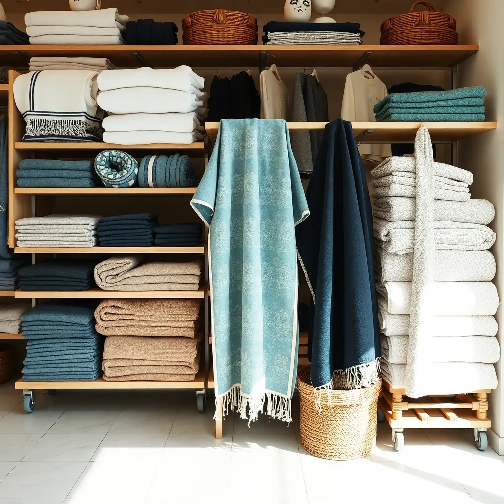
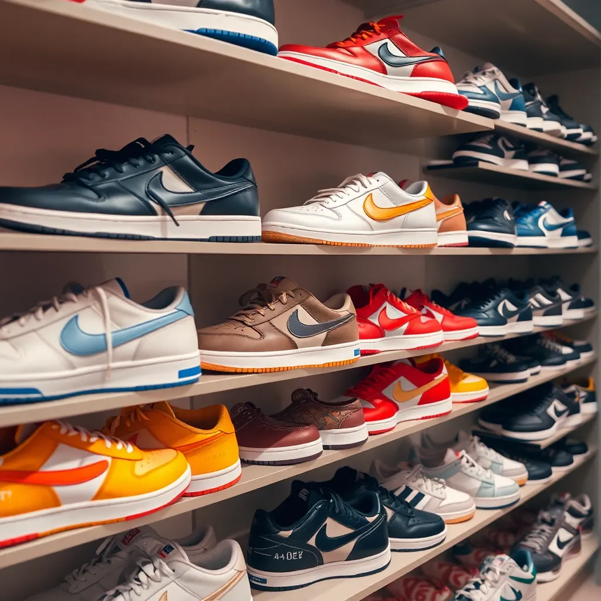
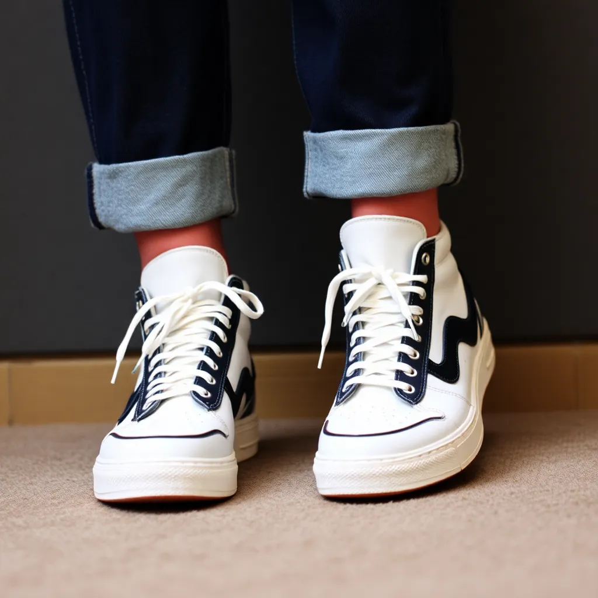
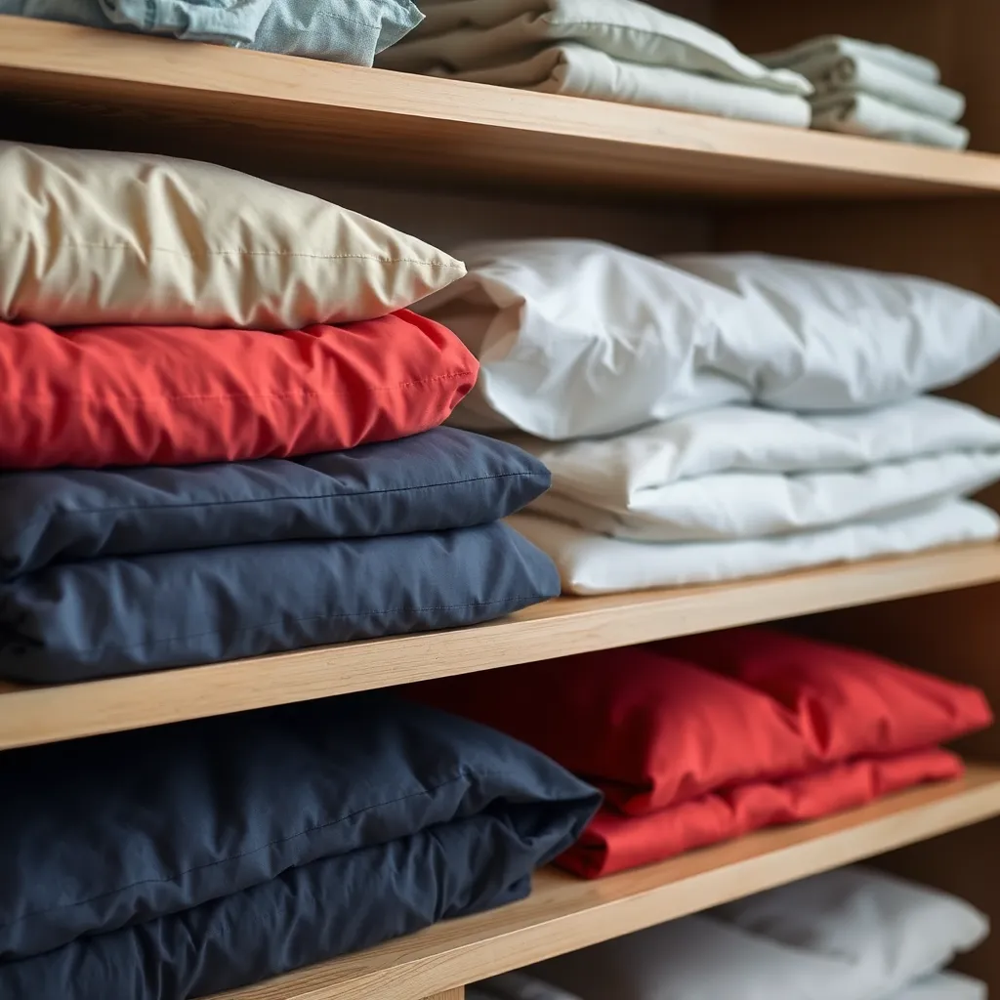

MEN WEAR
Discover a wide selection of apparel designed for every occasion, from sharp suits and casual wear to versatile outerwear and comfortable loungewear. Our collection features the latest trends and timeless classics in high-quality fabrics and contemporary designs.


WOMEN WEAR
Discover a world of fashion with our women’s clothing, where style meets convenience. Browse our extensive collection featuring the latest trends, timeless classics, and versatile essentials. From chic dresses and tailored suits to casual separates and cozy loungewear, we offer something for every occasion and personal taste.


KIDS SECTION
Explore a vibrant collection of stylish and comfortable apparel for children of all ages. From playful everyday wear and cozy loungewear to special occasion outfits, we have everything to keep your little ones looking great and feeling happy.


LEATHER Textile
Discover a wide range of towels for every need, from luxurious bath towels and plush beach towels to versatile hand towels and washcloths. Our collection features high-quality materials, vibrant colors, and stylish designs to complement any bathroom or spa experience.


BATH TEXTILE
Discover a wide range of towels for every need, from luxurious bath towels and plush beach towels to versatile hand towels and washcloths. Our collection features high-quality materials, vibrant colors, and stylish designs to complement any bathroom or spa experience.


SHOES
Discover a wide range of towels for every need, from luxurious bath towels and plush beach towels to versatile hand towels and washcloths. Our collection features high-quality materials, vibrant colors, and stylish designs to complement any bathroom or spa experience.

HOME TEXTILE
Explore our extensive range of premium home textiles, including cozy bedding, elegant curtains, plush rugs, and decorative cushions. Our collection features a variety of fabrics, colors, and patterns to enhance any living space